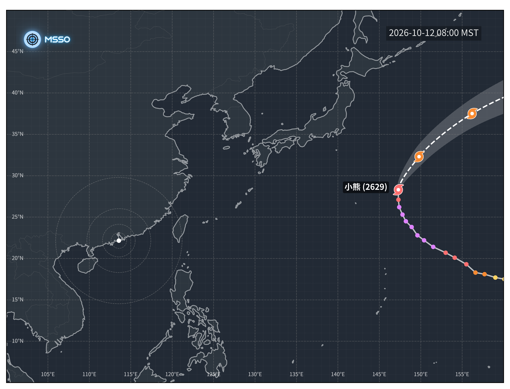

做好防颱準備 | 澳門民間氣象台
|
載入中...
載入中...
載入中...
近中心最大風速
-
m/s
Max Sustained Wind
移動速度
-
km/h
Movement Speed
距離澳門
-
km
Distance to Macau
中心位置
-
°N
-
°E
Central Position
請稍候，正在讀取氣旋報文...
熱帶氣旋 GIS 路徑圖
提供互動式地理資訊系統（GIS）路徑追蹤與強度分析
查看 GIS
全部熱帶氣旋
颱風路徑與預報

溫帶氣旋
低壓區
熱帶低氣壓
熱帶風暴
強烈熱帶風暴
颱風
強颱風
超強颱風
熱帶氣旋警報預測
熱帶氣旋警報
載入中...
熱帶氣旋資訊
載入中...
天氣實況
熱帶氣旋
天氣預報
空氣質素